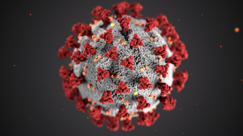

Algumas dicas de como se prevenir do COVID 19
Tire as roupas e calçados fora de casa (deixe sempre uma muda de roupa pronta ao sair);
Se precisar trazer as roupas para dentro, coloque-as em um saco plástico;
Se possível, lave as mãos na área externa da casa;
Se não puder lavar as mãos antes de entrar, evite tocar nas coisas antes de lavar as mãos;
Não cumprimente crianças, cônjuges ou outras pessoas que morem na casa antes de trocar de roupa e lavar as mãos;
Se possível, tome banho assim que chegar;
Desinfete celular, chaves e cartões bancários com álcool a 70%;
Limpe as embalagens que trouxe com solução de água sanitária (20 ml para cada 1 litro de água);
Lave alimentos com água e sabão e os deixe 10 minutos imersos em solução de água sanitária (20 ml para cada 1 litro de água).